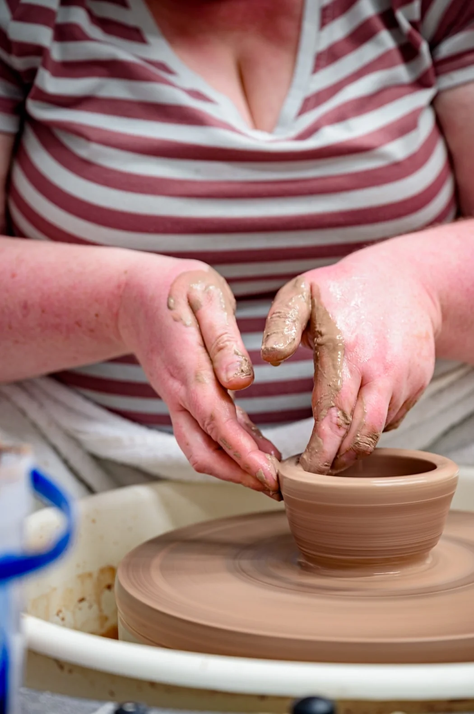
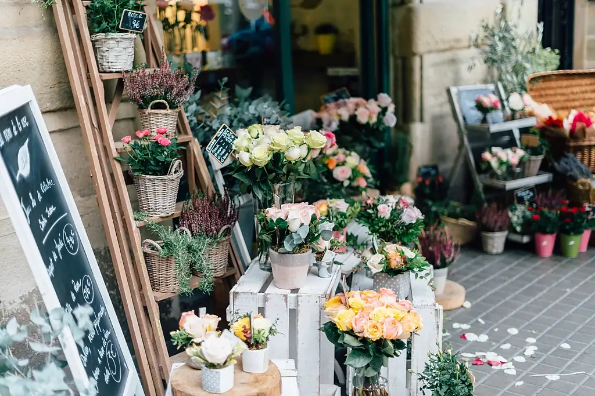
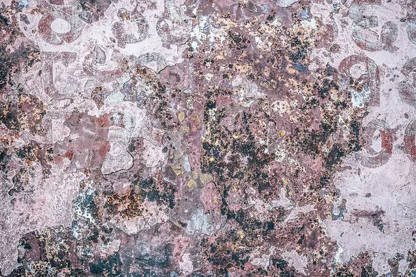

Make it by hand
Every box is tied, cushioned and closed by one of us. If a machine can do it better than a person, we do not use the machine.
We are a gift curation atelier in MMR Complex, Chinna Thirupathi, Salem. Not a warehouse, not a marketplace — a small studio that has been composing, wrapping and tying by hand since 2009.


Marina Rees was twenty-six, recently out of a job in brand design, and spending her evenings wrapping gifts for a market stall she had almost cancelled.
The stall did not take off the way she expected. What took off was the queue — people who wanted a box made for them, not one chosen off a shelf. By the second month she had stopped buying stock entirely and started composing to order instead.
Seventeen years later the method has not changed. A brief, a composition, a photograph, then hands at the table. The only difference is that there are now eleven of us, and the table is large enough to need it.
These are not slogans. They are the rules we actually fire people for breaking, including ourselves.
Every box is tied, cushioned and closed by one of us. If a machine can do it better than a person, we do not use the machine.
Uncoated board, compostable tissue, paper tape, and wool offcuts that are a by-product of someone else's mill.
We know what each of our thirty-four partners charges us, and we do not ask them to discount for volume.
We turn down more work than we take, every week. Volume is not a goal; the standard is.
None of them were planned. All of them changed what the studio was for.
Marina trades gift wrap for a market pitch. The stall sells less than expected; the made-to-order queue does the opposite.
Halima Okoye in east London agrees to fire a glaze exclusively for us. We discover what happens when a maker's name is on the box.
Ines Nakamura joins and asks a single question: why is there plastic in any of this? We never find a good answer, so we stop using it.
We start sending every order a studio photograph the same afternoon. Complaints fall by two thirds within a year.
Daniel Okoro joins to build a proper account system. Five hundred units in a week becomes a normal Tuesday rather than a crisis.
Forty-one countries, twelve thousand orders a year, and no plans to become a fulfilment centre.
No vanity metrics. These are the numbers we actually run the business on.
No account managers you will never speak to, no outsourced call centre. This is the full list.
Founder and head of studio. Ties the bow on every Maison tier and argues about ribbon width more than is reasonable.
Since 2009Composition lead. Responsible for matching a stranger to a gift in under four minutes, and for the written justification afterwards.
Since 2014Sourcing and sustainability. Visits every maker partner at least twice a year and writes the reports nobody asked for.
Since 2016Corporate accounts. Built the portal, the address importer, and the invoice that arrives as one document every month.
Since 2022Plus seven more: four wrappers, two studio assistants, and Ines's dog, who supervises quality control.
MMR Complex, Chinna Thirupathi, photographed on a Tuesday. The door is usually propped open — come by.
They are the only supplier who have ever sent me a photograph before asking for payment. It changed how I evaluate everyone else.
We visited the studio expecting to be shown a showroom. We were shown a worktable and four people who plainly had not stopped working.
Eleven employees in seventeen years. Ask most gift companies and they cannot tell you the number. Ask Stackly and they have it written down.
They paid for my first kiln firing before they had a single order to fill. I have worked with them for eleven years because of that.
A studio that is honest about what it can and cannot do is worth ten suppliers who will say yes to anything.

No appointment needed on weekdays. Bring the objects you want wrapped, or nothing at all — we are happy to just talk about it.